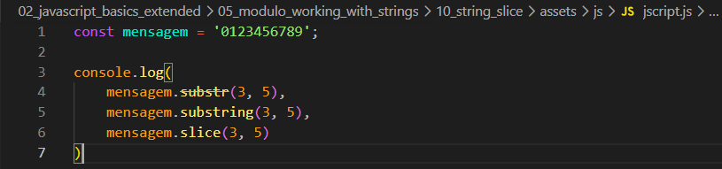
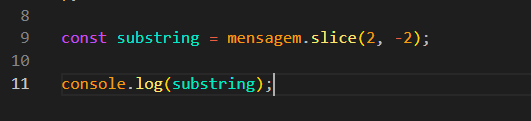

String Slice
Intro
Para essa aula teremos o seguinte codigo como exemplo:

Para essa aula teremos o seguinte codigo como exemplo:

Podemos observar que comecamos criando nossa variavel mensagem com seu devido valor, apos isso em nosso console imprimimos o valor com os seguintes metodos: substr(3, 5), substring(3, 5), slice(3, 5).
Quando chamamos nossa mensagem com o substr ele nos permite dois parametros primeiro o indice inicial e o segundo indice ate onde ira pegar ou seja, comecamos do 3 e pegamos os proximos 5 caracteres. Resultado com nosso exemplo os valores 3,4,5,6,7.
Muito similar ao primeiro seu primeiro parametro tambem e o indice que iremos comecar porem o segundo e onde iremos parar e nao sera incluido como resultado desse exemplo teremos em nosso console os valores de 3,4.
Tambem aceita os mesmos parametros e funciona parecido, porem sua diferenca da substring é que o slice tambem aceita valores negativos.

Em ambos substring e slice tambem aceitam 1 parametro se for passado apenas um parametro estamos dizendo de onde ele ira comecar e ira imprimir o restante de onde inicia.